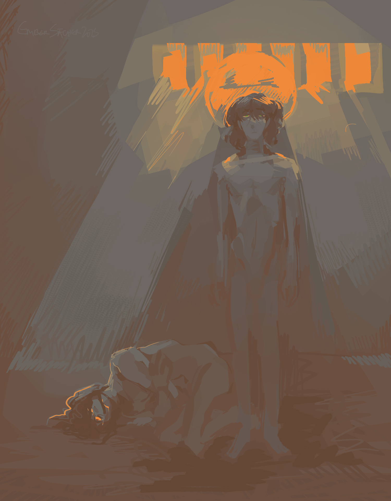

******
creation date: feb 11-mar 3
characters featured: isra, marcene
yes both charas in the 1st image are isra
aghh i wanted to do messy crosshatching, i feel like i used to do that good. but unlike my 2021 self i do NAWT have the patience, which unfortunately is the ONE thing u need if u wanna do good crosshatching. okayy scratch that, the SECOND illust here is good cross-hatching, the first is ass and balls because it was a tougher scene to draw i'm ngl. ack.... this sequence of illusts is mildly embarrassing to me as well, as with all lore-related drawings here, i don't think i'll ever shake that sense of shame. whatever,
art-wise i love the 2nd one but the 1st one peeves me a LOT. at the time i was somewhat proud of it, but now it looks a little odd to me. feel like i would have liked both the visuals and the process more if i'd just. painted normally. i think this subject matter woulda looked rly good as a painting too. i don't want to revisit it though, it was hard enough to draw the first time LOL
here's an alt color scheme for the 1st one.

he was never actually naked in this scene, it's moreso something something uhh rebirth something